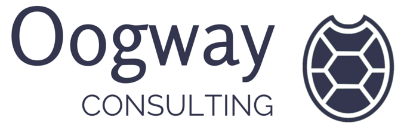
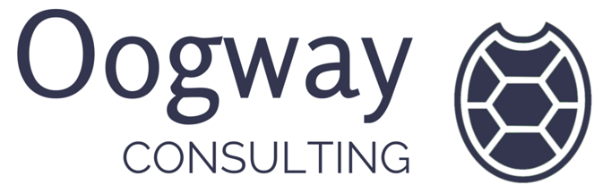

Deccan RubyConf 2016
6th Aug. 2016 Conference at Hyatt Regency Pune
7th Aug. 2016 Workshops
A Single-Track Conference + Workshops
RegisterGet in on the action, Sponsor Us
6th Aug. 2016 Conference at Hyatt Regency Pune
7th Aug. 2016 Workshops
A Single-Track Conference + Workshops
RegisterGet in on the action, Sponsor Us
Ernie's been programming since he was 6, and professionally for the past 18 years or so. He's passionate about creating things, and sees software development as an especially powerful medium for creation. Sometimes he still can't believe that people actually pay us to have this much fun.

Gelato connoisseur, pancake master, recovering events organiser, and web developer based in Melbourne, Australia. As well as working with talented development teams and writing open source Ruby libraries, Pat is a fan of bringing people together for gatherings small and large, including Trampoline, Rails Camp, and RubyConf AU.

I work at GitHub, I do a lot of open source work. I am part of the Rails committer team, as well as I am the principal server side developer at rubygems.org. You can check my github page for more info about my contributions. I live and work in Canada. And have been to Portugal once. I speak Portuguese, as it is my native language, as I was born in Brazil. I also speak French and Spanish. and I am learning Japanese at the moment :)

Mike is the CTO of Levanto Financial, and an avid open source contributor to many JavaScript, Ruby and Elixir projects. Formerly, as the UI Architect for Yahoo’s Ads & Data division, he provided technical oversight for over a hundred UI engineers and over a dozen projects, and was a driving force in the adoption of modern web technologies across the company. Mike has a passion for improving developer productivity, and for helping developers to focus on what makes their app or project special.

A Ruby on Rails Developer works with Josh Software, In spare time I enjoy outdoor activities like playing football, trekking etc.
Ernie's been programming since he was 6, and professionally for the past 18 years or so. He's passionate about creating things, and sees software development as an especially powerful medium for creation. Sometimes he still can't believe that people actually pay us to have this much fun.
Gelato connoisseur, pancake master, recovering events organiser, and web developer based in Melbourne, Australia. As well as working with talented development teams and writing open source Ruby libraries, Pat is a fan of bringing people together for gatherings small and large, including Trampoline, Rails Camp, and RubyConf AU.
I work at GitHub, I do a lot of open source work. I am part of the Rails committer team, as well as I am the principal server side developer at rubygems.org. You can check my github page for more info about my contributions. I live and work in Canada. And have been to Portugal once. I speak Portuguese, as it is my native language, as I was born in Brazil. I also speak French and Spanish. and I am learning Japanese at the moment :)
Mike is the CTO of Levanto Financial, and an avid open source contributor to many JavaScript, Ruby and Elixir projects. Formerly, as the UI Architect for Yahoo’s Ads & Data division, he provided technical oversight for over a hundred UI engineers and over a dozen projects, and was a driving force in the adoption of modern web technologies across the company. Mike has a passion for improving developer productivity, and for helping developers to focus on what makes their app or project special.
A Ruby on Rails Developer works with Josh Software, In spare time I enjoy outdoor activities like playing football, trekking etc.

Nick usually hangs around in pools sipping icey cold caipirinhas with his fellow open-source comrades and calls this a "conference". Apparently, he also attempts to ride a surf board in hot tubs and enjoys listening to and playing insufferable loud music in his secret laboratory 250 ft below the earth of the Outback. Should he ever leave his bunker, make sure to hug him if you meet him in person.
Sahil writes software for the joy of creation. He loves that feeling when castles of sand in his head come alive inside a computer. He’s been tinkering with Chef + Rails since 2012.
Mohit is addicted to learning, and believes ‘Ars longa, vita brevis’. He also believes that software development is primarily about teams, culture and empathy.
6th August - Conference talks |
Hyatt Regency | |
|
Keynote
by
Ernie Miller |
||
|
OO outside, FP inside - A primer on structuring programs
by
Aditya Godbole |
||
| In this talk, we will revisit our understanding of structuring programs. We will start from first principles and derive the tenets of the two styles of programming - functional and object oriented, and see how Ruby not only elegantly supports both, but encourages them. | ||
|
Open Source: Power and the Passion
by
Pat Allan |
||
| You likely use open source software every day: in your code, tools, and servers. But is it the stable foundation we expected? Let’s look at the strengths & weaknesses of open source and trade in our assumptions for a greater awareness. Together let’s shape a more sustainable open source ecosystem! | ||
|
Phoenix for Rubyists
by
Mike North |
||
| Because Elixir and Phoenix borrow so many good ideas from the Rails ecosystem, it’s astoundingly easy for Ruby developers to become proficient in this powerful new set of tools. First, I’ll introduce Phoenix from a Rails POV, and then show two ways it can be used in conjunction with Rails. | ||
|
Using multiple connection in ActiveRecord
by
Arthur Neves |
||
| Historically to handle multiple connections in Rails, you had to either patch active record or use a gem. Now, with some new apis on Rails 5.0, we can connect to multiple databases without needing any extra dependencies, and with just a few line of codes. And that will be even easier on Rails 5.1. | ||
|
Lost while developing API's in Rails?
by
Pramod Shinde |
||
| As web development is leaning towards single page application’s with JS framework’s, scalable API’s are now critical. I will be talking about the WHAT, WHY and HOW of RoR JSON API’s. You will also see how to build generic API’s to serve web and mobile platforms. | ||
7th August - Workshops |
||
|
Architecture Matters! A Trailblazer workshop
by
Nick Sutterer |
10 AM to 4 PM | Venue TBA |
| Trailblazer adds new abstraction layers to Rails. It introduces operations, form objects, policies and, of course, more. Why this is a good thing, and how additional abstractions help to master complex web applications you will learn in this full-day workshop. | ||
|
Automate your Infrastructure with Chef
by
Mohit Thatte, Sahil Muthoo |
10 AM to 4 PM | Venue TBA |
| This workshop will be a gentle introduction to the concepts of infrastructure automation with Chef. We will work on writing as much code as we can, so that attendees can get comfortable with the practical aspects of using Chef. The goal at the end of the workshop would be to be able to deploy a Rails app to AWS using your own Chef recipes and community cookbooks. |


 




Ticketing Sponsor
Call
Satish: +918087766880 Aditya: +919822193975 Anil: +919860352988